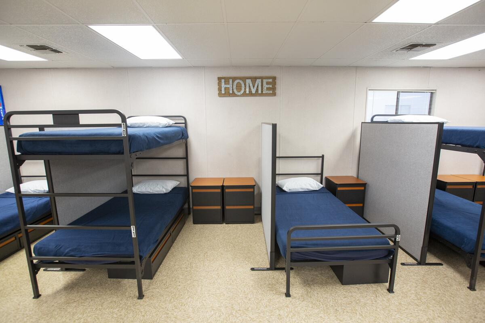

About We Care About YOU!
We Care About YOU! is an ambitious charity program to try to reduce homeless situation in our city.is an ambitious charity program that works to reduce homelessness in our city by providing support, resources, and hope to people in need. It believes that people will have a difficult time and need resources to rebuild their lives. Through support from government, community, and even campuses, We Care About YOU! helps people to find a warm shelter.

| Programs | Description |
|---|---|
| Emergency Shelter Assistance | Experiencing homelessness is a scary thing, We Care About YOU! offers warm shelters for you. |
| Job Readiness and Skills Support | We will offer temporary address so that you can find your job! |
| Meals and Essentials Outreach | We collaborate with Food in Need to provide fresh and fulfilling meals to residents in our shelters. Please remember that do not waste the food! |